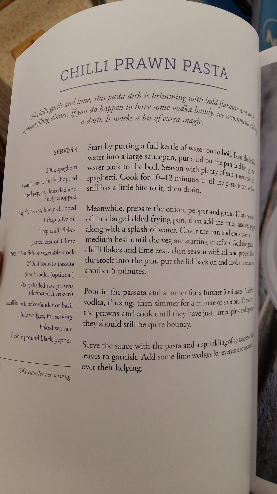

Chilli Prawn Pasta

Ingredients
Method
- Get a rolling boil, salt the water and add the 200g spaghetti for 10-12 mins, then drain.
- Fry the 1 onion and 1 red pepper (with a dash of water).
- Add the 2 garlic cloves, 1 tsp chilli flakes, and the zest of 1 lime and season.
- Pour the 100ml stock into the pan, put the lid on the pan and cook for 5 mins.
- Pour in the 250ml passata and simmer for 5 mins.
- (Optional) add the 50ml vodka and cook for 1 min
- Throw in the 400g raw prawns and cook until they turn pink and feel bouncy.
- Serve pasta with sauce and add coriander/basil leaves to garnish with lime wedges.